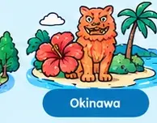

 住まい・暮らしの制度（個人の方向け）
住まい・暮らしの制度（個人の方向け）
耐震・太陽光・EV・省エネ住宅・子育てなど、お住まいの方向けの制度です。国の制度（個人向けの補助金・支援）とあわせて確認してください。
子育て1件
物価高対応子育て応援手当 受付終了児童手当受給世帯の0〜18歳の児童に支給する物価高対応の給付。
対象：児童手当を受給している世帯の0歳〜18歳の児童
期間：申請が必要な場合は令和8年6月30日まで（受付終了の可能性）
締切：2026-06-30沖縄県宜野湾市
対象：児童手当を受給している世帯の0歳〜18歳の児童
期間：申請が必要な場合は令和8年6月30日まで（受付終了の可能性）
締切：2026-06-30沖縄県宜野湾市
児童1人あたり2万円
公式 →
住まい・暮らし2件
バリアフリー・介護住宅リフォーム支援事業（令和8年度）バリアフリー・断熱工事など既存住宅のリフォームを市内施工業者で行う場合に補助する。
対象：申請者が居住する住宅／工事費20万円以上（税込）沖縄県宜野湾市
対象：申請者が居住する住宅／工事費20万円以上（税込）沖縄県宜野湾市
対象工事費の20%（上限20万円）
公式 →
バリアフリー・介護転倒予防のための住宅改修費助成手すり設置や段差緩和など転倒予防の住宅改修費を、市から業者へ直接支払う形で助成する。
対象：65歳以上で市内在住／基本チェックリストで事業対象者と承認された方沖縄県宜野湾市
対象：65歳以上で市内在住／基本チェックリストで事業対象者と承認された方沖縄県宜野湾市
上限75,000円（令和7年度に5万円から引上げ）
公式 →
沖縄県の制度

 宜野湾市の制度（事業・創業の方向け）
宜野湾市の制度（事業・創業の方向け）
宜野湾市特産品等販路拡大支援事業補助金市内の中小企業者が県内外の展示会等に特産品を出品する費用の一部を補助する。
対象：市内で事業を営む中小企業者／展示会等へ特産品を出品する事業
期間：令和8年4月15日〜令和9年3月31日（予算額に達し次第終了）
締切：2027-03-31宜野湾市 経済課
対象：市内で事業を営む中小企業者／展示会等へ特産品を出品する事業
期間：令和8年4月15日〜令和9年3月31日（予算額に達し次第終了）
締切：2027-03-31宜野湾市 経済課
展示会参加費用の2/3。県内5万円以内・県外10万円以内（市長賞認定品の販路開拓費は上限20万円）
公式 →

沖縄県の制度（事業・創業の方向け）

国の制度・全国から探す
国の制度は、市や県の制度と並行して使えるものがあります。まずは、サイトのトップで事業の内容と郵便番号を入れると、対象になりそうな制度をまとめて確認できます。

 申請前に確認したいこと
申請前に確認したいこと
- 対象になる事業者か（個人事業主か法人か、創業後の年数、従業員数など）
- 対象になる経費は何か（設備、広告、外注など）
- 多くの補助金は後払いのため、先に自己資金で支払う必要がある
- 電子申請が必要な場合は、gBizID などのアカウントを早めに取得する
この記事は公開情報をもとにした参考情報です。制度の対象・金額・公募時期は年度や公募回によって変わるため、申請前に必ず各制度の公式情報を確認してください。